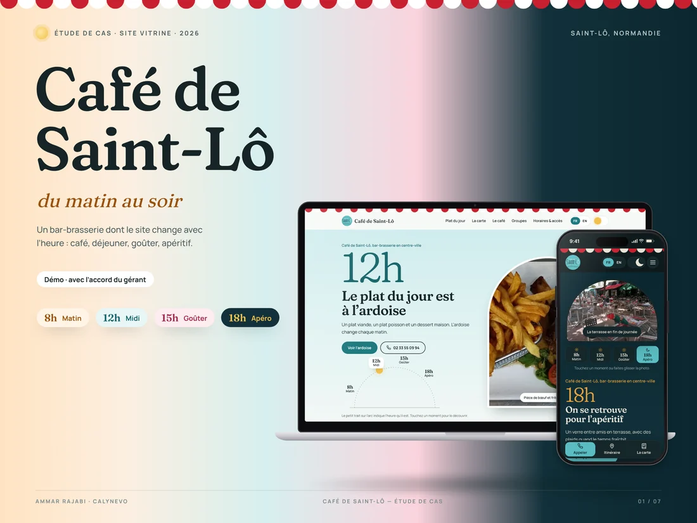
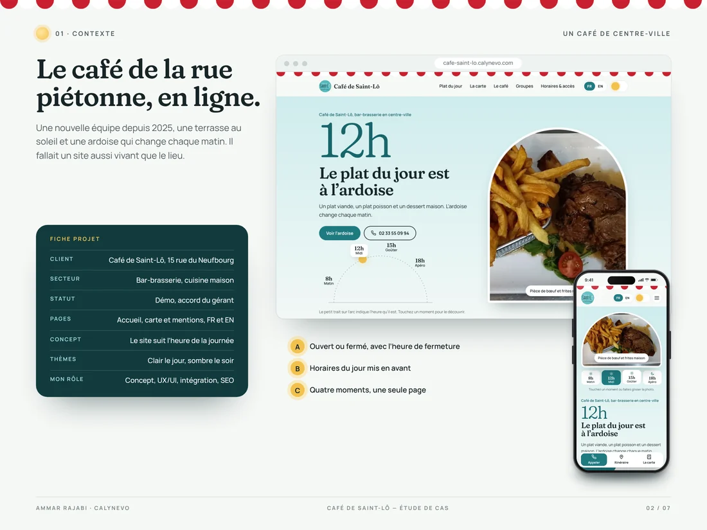
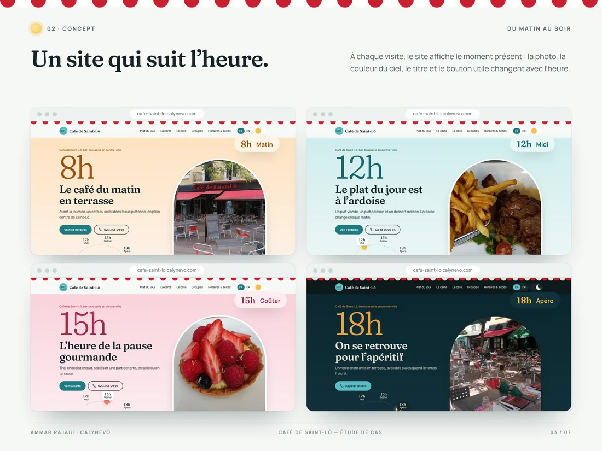
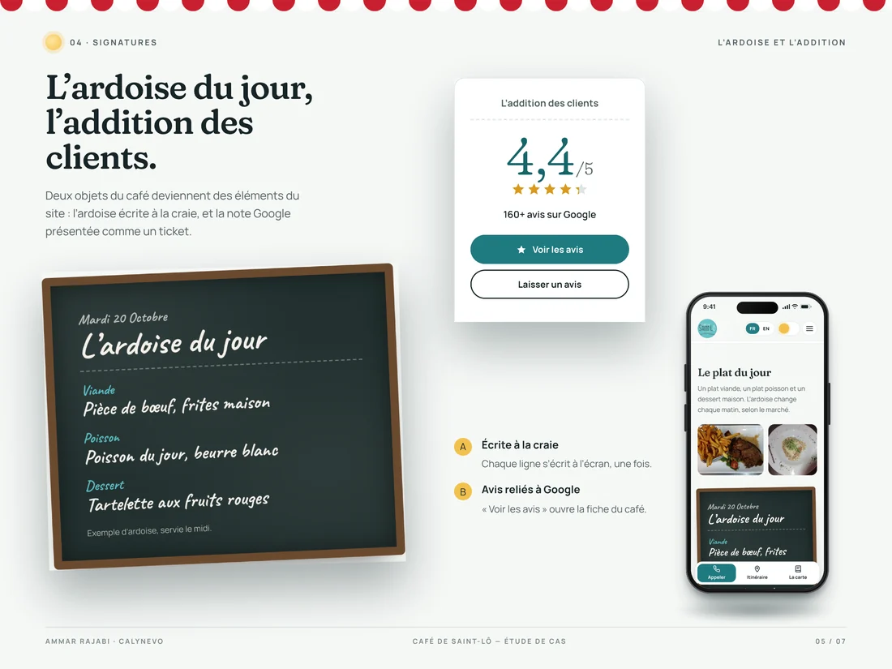
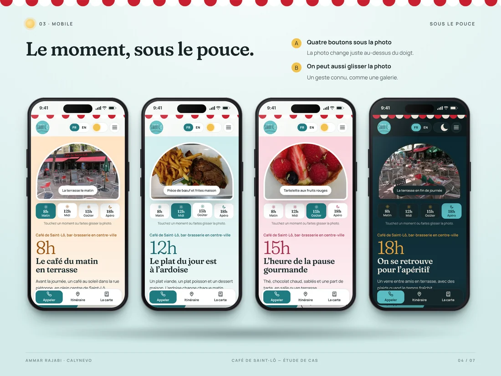
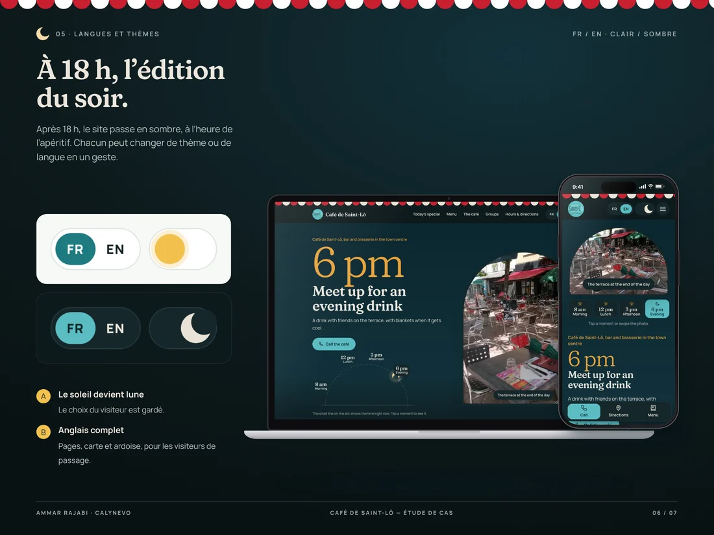
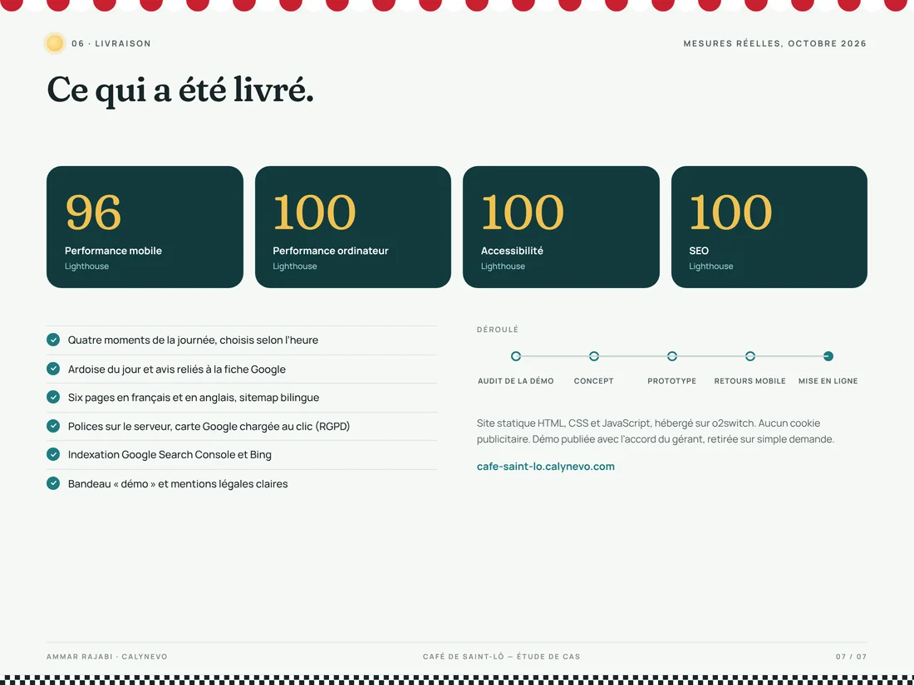

Café de Saint-Lô
A showcase website for a bar-brasserie on rue du Neufbourg. The site follows the time of day: morning coffee, the lunch special, the afternoon treat, then evening drinks.

In 30 seconds · Concept demo
- The need
A town-centre café whose specials board changes every day.
- What I did
A “morning to evening” site that changes with the clock, daily board, Google reviews.
- The result
A concept demo, different from my other demos.
Key numbers
- 4moments of the day
- 4.4Google rating
- FR+ENtwo languages
- 2themes, light and dark
The context
A town-centre café with a terrace and a specials board that changes every day. My first demo looked too much like my other sites.
The challenge
Build a site as lively as the place, different from the other two demos, that shows what matters at the moment of the visit.
My role
- “From morning to evening” concept: four moments picked by the clock.
- HTML, CSS and JavaScript build, daily specials board and Google reviews.
- Mobile feedback: bigger logo, animated menu, back-to-top button.
- Local SEO, Google Search Console, Bing and Lighthouse quality checks.
01 / 06
A different concept
My first two demos looked alike. For this café the idea is different: “From morning to evening”. The site changes with the time, like the room.

Context Open or closed, today’s hours, four moments.
02 / 06
Four moments
Depending on the time, the site shows coffee on the terrace, the lunch special, the afternoon treat or evening drinks. Photo, sky colour, title and main button change together.

A site that follows the clock Morning, lunch, afternoon, drinks: photo, colour and title change.
03 / 06
Made for the phone
Four buttons under the photo, a swipe gesture and a small hint the first time.

The board and the bill The daily specials in chalk and the Google rating as a receipt.
04 / 06
The daily board
The lunch special is written in chalk, like in the café. Google reviews are shown as a bill.

The moment under your thumb Four buttons under the photo, or swipe it.
05 / 06
Dark in the evening
After 6 pm the site turns dark, in time for drinks. Anyone can switch theme or language.

The evening edition Dark theme after 6 pm and a full English version.
06 / 06
Quality and launch
Fonts hosted on the server, Google Maps loaded only on click, bilingual sitemap, Search Console and Bing. A “Site by CALYNEVO” credit stays in the footer.

Delivery Real Lighthouse scores and the list of what was delivered.
A concept demo, not a commission
I made this site without a commission, to show my skills to the business. It will be removed on simple request.

Contact
A role, a project or a simple question?
I reply in English or French, usually within 48 hours.